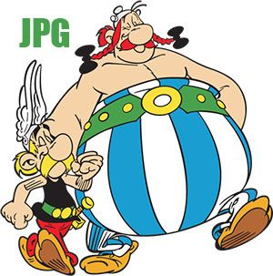
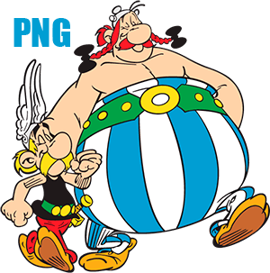
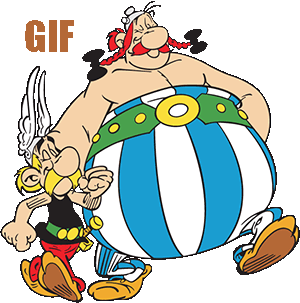
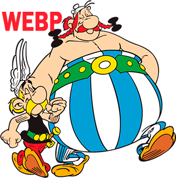

Tipos de imagenes
Imagenes JPG
- Alta compatibilidad
- Ajuste de calidad
- Tamaño reducido
- Pierde calidad a mejor comprension
- No admite transparencia

Imagenes PNG
- Admite transparencia
- Excelente calidad de imagenes
- Idelas para dibujos con colores planos
- Ocupa mas espacio que un JPG
- No son eficiente para fotografias

Imagenes GIF
- Soporta animaciones
- Muy compatible
- Abmite transparencia
- Aumenta mucho su Tamaño
- No son eficiente para fotografias

Imagenes Webp
- comprension superior
- Admite transparencia
- Excelente equilibrio calidad Tamaño
- Compatibilidad limitada
- Admite animaciones

Imagenes SVG
- Escalables sin perdida
- Muy ligeras
- Se pueden animar con JavaScript
- No apto para fotografias
- Requieren de conociento tecnico para editar su codigo
SVG como archivo
SVG como codigo